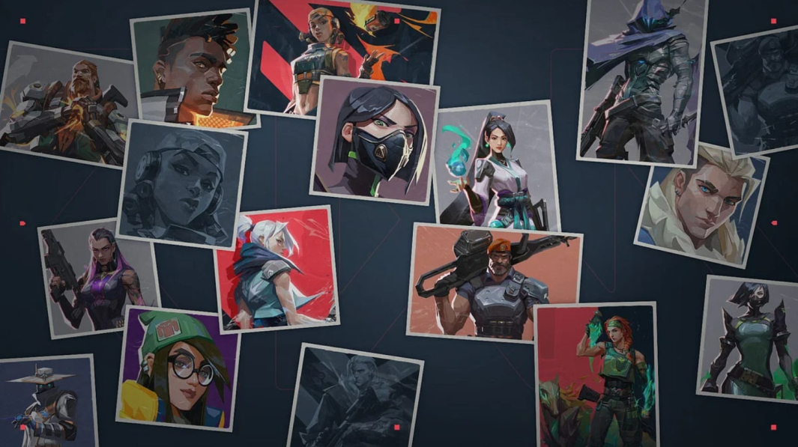

Valorant
Valorant is a free-to-play first-person tactical hero shooter developed and published by Riot Games, for Windows
A 5v5 character-based tactical shooter
Gameplay
Valorant is a team-based first person shooter set in the near future. Players play as one of a set of Agents, characters based on several countries and cultures around the world. In the main game mode, players are assigned to either the attacking or defending team with each team having five players on it. Agents have unique abilities, each requiring charges, as well as a unique ultimate ability that requires charging through kills, deaths, orbs, or objectives.
Competitive
Competitive matches are the same as unranked matches with the addition of a win-based ranking system that assigns a rank to each player after 5 games are played. Players are required to reach level 20 before playing this mode. In July 2020, Riot introduced a "win by two" condition for competitive matches, where instead of playing a single sudden death round at 12-12, teams will alternate playing rounds on attack and defense in overtime until a team claims victory by securing a two-match lead.

Agents
There are a large variety of playable agents available in the game. Agents are divided into 4 roles: Duelists, Sentinels, Indicators, and Controllers. Each agent has a different role which indicates how the agent is usually played.

Developed by Riot Games and released on October 27th, 2020 for PC.